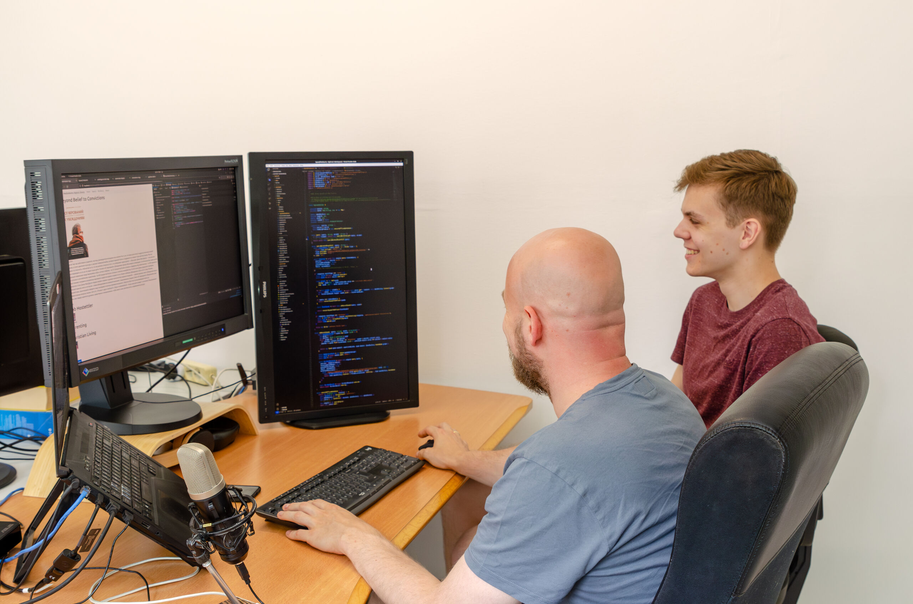

Are you passionate about digital media and the ways it can help people find God and strengthen groups of Jesus followers? Are you a visionary team player who is not afraid to make decisions? Do you want to be part of a greater purpose, spreading the timeless message of hope in today's digital era?
LightNet is an online product that will enable groups of Jesus followers to:
- Have their own platform to share Christian videos, eBooks, sermons and more
- Make it easy to create engaging community webapps
- Share media with other LightNet instances in an autonomous way
MediaWorks is looking for a Product Owner to help the development team build LightNet and get it into the hands of ministries.
Do you get energy from working with people? Great, that is what we are looking for! In this role you will build relationships with (potential) users and feed their insights and ideas into shaping the development of the product. You will work together with a small development team and a handful of volunteers that are contributing to development in their spare time. Over time we would love to see a motivated community of developers who can easily join development on parts or extensions of the product. We can use your help with this!
You will be the delegated visionary that makes day-to-day decisions. Together with the MediaWorks leader you will be responsible for the long-term vision of this product. You will combine an understanding of what product users want with the technical requirements from the bigger long-term vision. Another essential part of your work is weighing the pros and cons and prioritising next steps.
Could you be the product owner that clicks with the product and our team? We would love to get to know you over a digital coffee chat where we can provide more background information about this product which we are so passionate about.
MediaWorks equips local ministries around the globe with relevant print and digital media that helps them share the gospel and strengthen believers in their communities.
Requirements
- It would be very good to have previous experience as a Product Owner but it is not required.
- Team player who is willing to learn, adapt and work on an international team based near Vienna, Austria, or working remotely from anywhere in the world with good internet.
- Good communication skills, able to communicate in English
- Understanding of and compliance with OM core values and statement of faith
Location
It is preferable to work in Stockerau, Austria, (or visit regularly), or it is possible to work remotely from anywhere in the world with good Internet connection. Accomodation on site (in Austria) might be available at a very reasonable charge.
Financial
Salaries for full-time OM workers are not provided by the organisation but through individual support raising. There is also the possibility to offer your time on a voluntary basis.
We would love to have a (digital) coffee and talk!
About us
MediaWorks equips local ministries around the globe with relevant print and digital media that helps them share the gospel and strengthen believers in their communities.
- A ministry of Operation Mobilisation
- Hybrid team of 20+ members, based near Vienna, Austria, or working remotely
- Rich history in publishing and media
An impression of a MediaWorks online meeting
News articles about LightNet

Working together towards a shared goal
During a three-month internship, Aaron worked alongside software developers creating LightNet.

MediaWorks launches new digital library
MediaWorks launched their digital library, a platform that provides digital resources to least-reached people groups.

New digital tool in development
MediaWorks is building a digital tool called LightNet that will enable ministries and churches to create webapps quickly. With the new digital tool, they seek to simplify the process, costs, time and resources involved in creating webapps. The webapps will serve as platforms to share curated Christian media that engages with specific people groups.